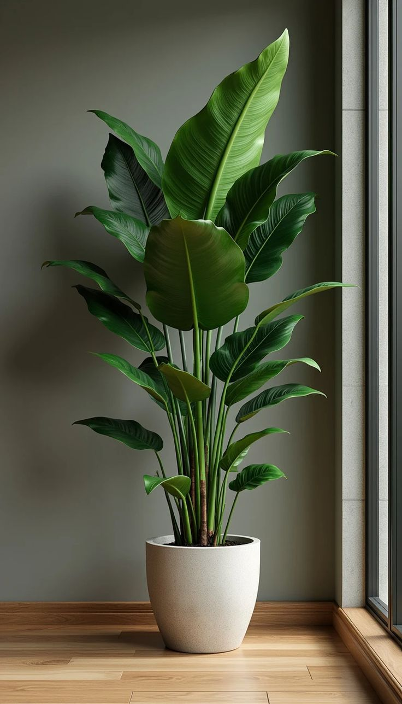
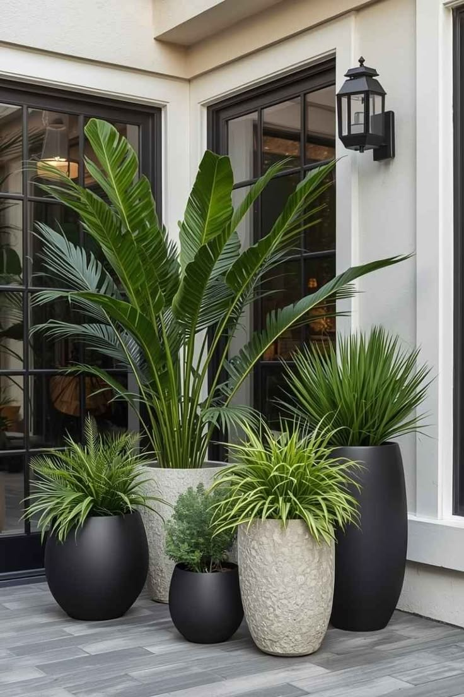
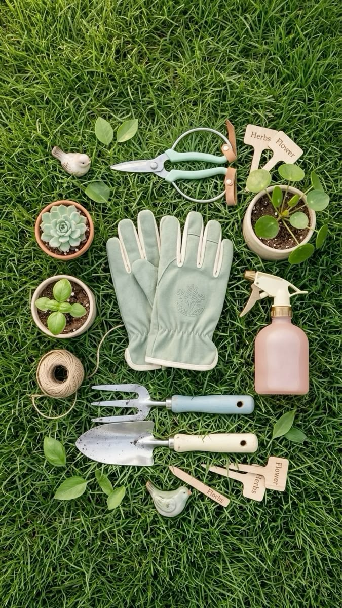

A little bit of green for every space
What We Sell
From easy-to-care-for houseplants to beautiful pots and plant supplies, Ama has something for every kind of plant lover. Whether you're just starting out or already have a little jungle at home, you're welcome to ask.
Explore the collection
Shop by Category
Indoor Plants
Bring a little green into your home.
Outdoor Plants
Plants made for your outdoor space.
Succulents
Small, beautiful and easy to care for.

Houseplants
Starting from GH₵ 25

Pots & Planters
Starting from GH₵ 15

Soil & Accessories
Starting from GH₵ 10
Meet Ama
About Ama
Ama has been running her plant shop in the neighborhood for over 5 years now. She loves plants and wants to help everyone keep their plants alive and thriving.
Not sure what plant is right for you? Just ask Ama, she's happy to help.
A little help for your plants
Plant Care Tips
Not sure what your plant needs? Choose a topic below for simple care tips.
Most houseplants prefer indirect sunlight and do well near a window that does not get direct afternoon sun. Water when the top inch of soil feels dry, usually every 5 to 7 days. Avoid leaving them in standing water as this causes root rot.
Succulents and cacti store water in their leaves and stems, so they need very little watering. Water deeply once every two to three weeks and let the soil dry out completely between waterings. They love bright, direct sunlight.
Tropical plants like high humidity and warm temperatures. Mist the leaves regularly or place a tray of water near the plant to keep moisture in the air. Keep away from cold drafts and air conditioning vents.
Outdoor plants need regular watering, especially in the dry season. Water in the early morning or late evening to reduce evaporation. Feed with a general-purpose fertiliser every four to six weeks during the growing season.
Need a little plant help?
Ask Ama
Have a question about a plant? Don't worry if you're not sure what to ask. Send your question and Ama will get back to you.
Let's keep in touch
Get In Touch
Fill in the form below and Ama will get back to you as soon as she can.